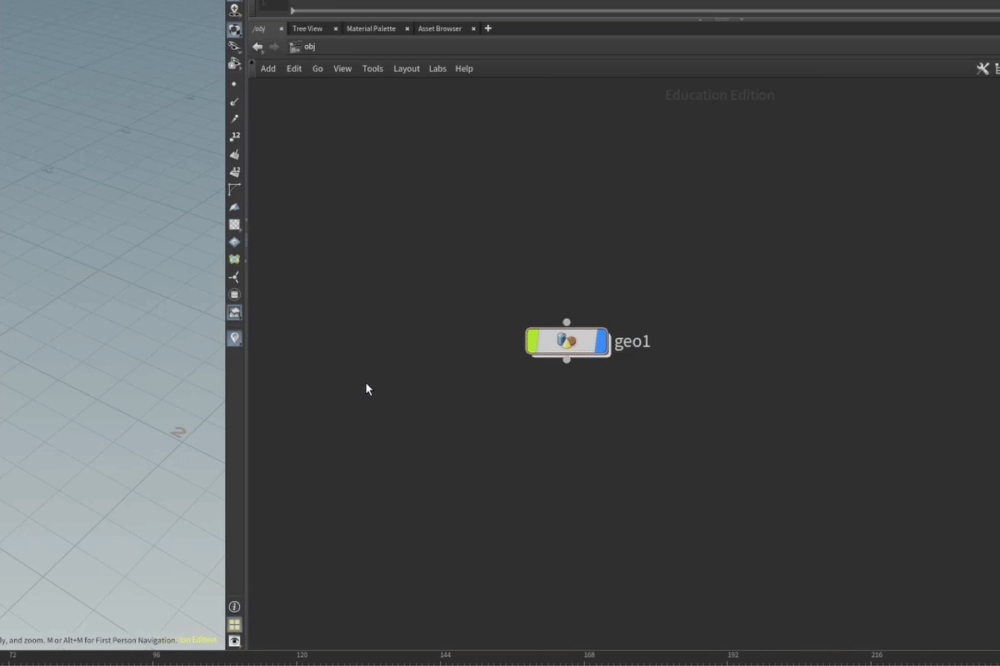

| On this page |
Tip
If you encounter any bugs, have any questions or suggestions for new or existing features, please contact me via email or discord:
 @matthis.bozec
@matthis.bozec
Note
This package is compatible from Houdini 20.0 and above but certain features are not compatible with every version, check the features documentation for compatibility info.
The package was tested on Windows but should work on other platforms, if you encounter any issues with a specific OS please contact me.
Installation ¶
Thanks to houdini's package system, HFLOW UI is easy and straightforward to install.
You can buy and download the latest version of the package from Gumroad.
Then head to your houdini preferences (Documents/houdiniXX.Y/ by default) and find the packages folder (create it if it doesn't exist), in there place the hflow_ui.json file and the HFLOW_UI folder.
Now you can restart or launch houdini and the package will be loaded.
Note
Buying the package also gives you access to future updates that will be updated on Gumroad, if a new version is available, you will see a message in the preferences window.
Overview ¶
The HFLOW UI package adds general user interface improvements to Houdini. There are different features to play around with, each one is easily customizable through the preferences window. From there you can enable/disable each feature, edit hotkeys and change the settings.
Preferences window:You can access the preferences window from the Edit > Preferences menu or with the Open/Close Preferences shortcut if the feature is enabled. (Ctrl+H by default.)
Editing Preferences:
You can edit all of the package's preferences from this window. When editing the preferences, changes take effect immediately but you can save or discard your changes using the buttons in the bottom right corner. You can also undo any changes Ctrl+Z or reset the preferences to their default values via the Reset to Default button (bottom left).
Tip
You can right-click any feature in the preferences window to quickly access options for:
-
Discarding changes
-
Applying changes
-
Resetting to default
-
Saving current settings as default
for that specific feature only.
With the HFLOW UI package, you can edit and customize the different shortcuts to your liking by clicking on the Shortcuts button which will open a popup window to add a new shortcut, you can then apply, cancel or unbind the shortcut. The shortcuts can be a combination of any key and mouse buttons, whenever the hotkey is triggered the corresponding action will be run but some actions might require conditions to be met for the action to be executed. (For example being above a node in the network editor). In general it is recommended to avoid using common shortcuts for the actions like LeftButton or Ctrl+Z.
Warning
Due to a bug in Houdini, it is not recommended to use this package with Houdini 20.5.279 to 20.5.365 and Python 3.11 This version can cause houdini to crash on startup. Please use another version or install Houdini with Python 3.10 via the launcher
Features ¶
The package is broken down into different features, that each contain shortcuts, actions and settings. Each feature can be enabled/disabled in the preferences. By default, certain features are disabled, and certain shortcuts are not assigned.
Preferences Window ¶
This feature is used to control shortcuts and settings regarding the preferences window.
Shortcuts / Actions
Open/Close HFLOW UI Preferences
Opens or closes the HFLOW UI preferences window.
Open Documentation
This will open a Houdini help Browser with documentation for the package (You can also press the “?” button in the top right)
This shortcut is only triggered if the preferences window is currently activeOptions
Open HFLOW UI Preferences on startup
When enabled, the HFLOW UI preferences window will open automatically when Houdini starts.
Fullscreen ¶
This feature enables the fullscreen mode for the Houdini windows
Warning
Windows
On Windows 11, the fullscreen mode still shows the taskbar which means the only space gained is with the title bar. You can set the taskbar to auto-hide but Houdini can display incorrectly when this is enabled.
Shortcuts / Actions
Set Fullscreen
Makes the current active Houdini window fullscreen. (or the last active window if the preferences window is currently the active window)
Remove Fullscreen
Exits fullscreen mode for the current active Houdini window. (or the last active window if the preferences window is currently the active window)
The shorcut is Shift+Escape by default to avoid conflict with the default Houdini shortcut to cancel cooking.
Toggle Fullscreen
Toggles fullscreen mode for the current active Houdini window. (or the last active window if the preferences window is currently the active window)
Options
Show Fullscreen on Startup
When enabled, the Houdini main window will start in fullscreen mode.
Show Time When Fullscreen
Displays the current time when in fullscreen mode (in the bottom right corner).
Dynamic Pane Resize ¶
This feature allows you to easily resize Houdini panes when moving the mouse close to the pane borders without needing to press the pane splitter, and allows to resize the panes diagonally too

Shortcuts / Actions
Resize Panes
Activates the dynamic pane resizing mode.
Tip
This action is triggered when the mouse is close to the pane border, you can change the distance in the options. The resizing direction will be automatically defined based on which border the mouse is closest to.
Options
Distance to Pane Border
Sets the distance needed to the pane border to trigger the dynamic pane resizing mode. This value is expressed as a percentage of the panes size
Resize Windows
When enabled, this option allows resizing of windows as well, this can be useful to easily resize floating panels for example.
Color Scheme ¶
This feature allows customization of Houdini's color scheme, the color scheme preferences available in houdini are very powerful but long and tedious to edit. This feature breaks the general UI items down to 4 colors to easily choose custom colors for your Houdini

Shortcuts / Actions
Random Color Scheme
Generate a random color scheme for the interface. This color scheme is random but coherent (respecting contrast and making a dark theme)
Options
Main Color
The primary color used for the interface background.
Tint Color
The accent color used for highlights and selections.
Border Color
The color used for borders and separators.
Text Color
The color used for most text and labels.
Warning
Due to new api changes, this feature is only available in Houdini 20.5 and above.
Custom Splash Screen ¶
This feature allows you to change or disable the Houdini splash screen
Tip
When this feature is disabled (which is the default), the default Houdini splash screen will be used. To disable the splash screen completely, you need to activate this feature and deactivate the show splash screen option.
Options
Show Splash Screen
Choose if you want Houdini to display a splash screen on startup.
Splash Screen File
Select a custom image file to use as the splash screen.
Note
The splash screen size is dependent on the image size.
Most Common Nodes ¶
This feature provides quick access to your most frequently used nodes, it can be used with the tab menu to easily place down the nodes you most commonly used, and also allows you to check your node statistics!
Shortcuts / Actions
Show/Hide Most Common Nodes
Toggle the display of the most common nodes panel inside a network editor. This feature was designed to be used with the tab menu but you can use your own shortcut to display only the most common nodes.
Reset Most Common Nodes
Resets your most common nodes statistics.
Warning
This is not undoable meaning you will lose the track of you most used nodes.
Show Node Statistics
Displays a window that shows the statistics of the nodes you have used.
Options
Amount of Nodes
This option lets you set the amount of nodes to display in the menu, these will be ordered from most common to least used.
Show on tab press
When enabled, the most common nodes menu will be displayed next to the tab menu in the network editor.
Tip
The most common nodes list adapts to your workflow over time. Consider resetting it occasionally if your workflow changes significantly.
Scale Rotate Nodes ¶
This feature adds the ability to scale and rotate nodes in the network editor, this feature dynamically creates node shapes to change the appearance of nodes
Tip
The scaling feature can be particularly useful to easily visualize which nodes are the most important in your network.
Shortcuts / Actions
Note
These shorcuts are triggered when hovering over a node in the network editor.
Scale Nodes
Scale the underlying node while holding the shortcut.
Rotate Nodes
Rotate the underlying node while holding the shortcut.
Reset Rotate Scale
Reset the scale and rotation of the underlying node to default.
Note
These operations are purely visual and don't affect the node functionality. They can be helpful for organizing complex networks or creating visual hierarchies. All the modifications are saved to the scene as long as you open it with this package.
Warning
Unfortunately, due to a bug in Houdini fixed in version 20.5.473, this feature is disabled on previous versions as it causes houdini to crash when changing node shapes through the api. Use version 20.5.473 or higher to use this feature.
Look Inside Node ¶
This feature allows you to quickly peek inside nodes without needing to dive into them, showing the contents inside.

Shortcuts / Actions
Show/Hide Inside Node
Hold to display the child nodes inside of a node.
Tip
Note
This action only works when hovering over a node in the network editor.
Options
Show Inside Node on MMB Press
When enabled, the inside nodes will be displayed when inspecting a node (middle mouse button).
Show on Top of Node Info Window
Choose whether to display the inside nodes window when it would show on top of the node info window due to limited space.
Background Images ¶
This feature adds a few improvements to the underrated background images in Houdini
Shortcuts / Actions
Paste Images to Background
Paste an image from the clipboard as a background image.
Note
If the copied image is an on disk file, it will be pasted as a normal background image.
If the copied image contains direct image data, if it was copied from the internet for example, you have the choice to paste it as is but it will not be saved with the Houdini scene or to save it to disk (in which case it can be added normally)
Flipbook to Background GIF

Creates a flipbook that will be converted to a GIF and added as a background image GIF.
This uses the default flipbook parameters that can be edited in the bottom right of the scene viewer.
Once the GIF is created, you can save it to disk so it can be saved with the scene, or use it as is in which case it will be destroyed when the scene is closed.
Note
The flipbook GIFS are limited to 856 pixels and 500 frames total, the GIF quality is not always ideal to view a flipbook but can be very useful as a preview to see what a networks output might look like.
Options
GIF Background Images
Enables support for animated GIF background images. The GIFs can be edited and parented to nodes just like the regular background images.
Ctrl+i is the default shortcut to edit background images, or via the network editor menu: Tools > Edit Background Image
Warning
Using GIFs can lead to performance issues, use with caution. This will be visible if you add a lot of GIFs and a lot of network editors. The GIFs are limited to 856 pixels and 500 frames total, you cannot have more than 12 GIFs at once.
Drag and Drop Background Images
Allows you to drag and drop images into the network editor directly, these can be GIFs if the above option is enabled and you can add more than one at a time.
Network Editor Shortcuts ¶
This feature adds additional useful shortcuts to navigate the network editor, using the closest node to the cursor
Shortcuts / Actions
Move Up
Quickly moves up one level in the network hierarchy.
Note
This only triggers if there is no network item under the cursor. For example the default shortcut allows you to double click anywhere in the empty space to move up a level.
Dive Into Closest Node
Dive into the closest node to the cursor.
Note
This respects dive targets, for example if the node is a Solver, the dive will go to the solver's core.
Select Closest Node
Select the node closest to the cursor. Or deselects it if it is already selected
Disable Closest Node
Toggle the bypass flag of the closest node.
Toggle Closest Node Render/Display Flag
Toggle the render/display flag of the closest node.
Options
Distance to Closest Node
Sets the maximum distance the cursor must be from a node to trigger the above shortcuts.
Overlay Network Editor ¶
This feature allows you to overlay a network editor to the scene viewer for quick node editing, particularly useful for single screen setups / laptops.

Shortcuts / Actions
Toggle Overlay
Toggles the overlay network editor on and off to easily switch between the two.
Tip
Note
This shortcut works above a scene viewer, or above the network editor overlay if it is activated.
Options
Overlay Window Opacity
Changes the opacity of the overlay window (25-90%).
Embed Window ¶
This feature allows embedding different windows into the houdini UI
Tip
This is a “fun” feature that might not have any real use cases.
The most use I've found for this is to embed a chrome page and put some music on there while working to easily change music without leaving Houdini.
Warning
Windows
This feature is only available on Windows OS.
This feature can be quite fun to play around with but keep in mind that it is experimental.
Not all windows will work with this pane tab and when the tab is closed or the window is closed, it must be deleted manually using the task manager for example.
Tip
The easiest way to add this tab to a pane is with the + > New Pane Tab Type > HFLOW UI : Embed Window.
Shortcuts / Actions
Create Embed Window Floating Pane
Creates a new floating pane that contains the “embed window” interface.
There isn't much use in using this in a floating pane since you might as well use the window directly but this has the advantage of staying on top of houdini